Electronics Refresher¶
This is a brief overview of some of the physics concepts you will need in order to understand the basics of electrophysiology.
Charged particles exert electric force¶
Our biological signals are generated by ions, either positively charged (Na+, |K+|, |Ca2+|) or negatively charged (|Cl-|). Electrons are the negatively charged particles in our electrodes and wires (i.e., metal) that allow these components to conduct electrical signals. Charged particles exert an electric force on other charged particles.
Equation 1: F = electric force, k = Coulomb constant, q1 + q2 = charges, r = distance of separation.
Coulomb’s law (Eq 1) describes that this force will have both magnitude (it will be bigger if the charges are larger or closer together) and direction (it will either attract or repel, depending on whether the charges have different or the same polarity).
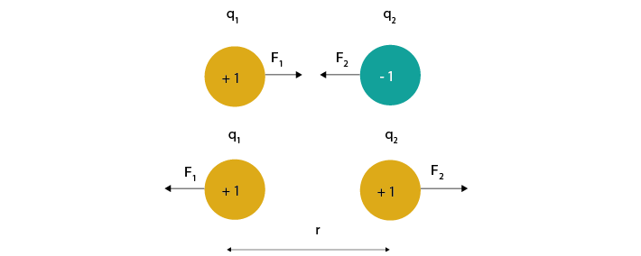We often represent electric force using electric field lines surrounding the particle. These lines show that charges in the vicinity of the particle will be influenced by its force in a particular direction.
If a charged particle is free to move (for instance, it is an ion in the cytoplasm, and not bound to a membrane) and placed within an electrical field, then these forces acting on it will cause it to move in a certain direction.
Currents are moving charges¶
Moving charges create a current (I) measured in Ampere. The current tells us how much charge is moving per second.
By convention, the direction of this current is always the direction of positive charge movement. When we talk about currents generated by a negatively charged ion, such as chloride, we describe it as a positive current moving in the opposite direction to the chloride ion.
Electric Potential Difference¶
If we want to create a current of ions across a membrane, we have to provide a driving force to make them move. Electric potential is the ability to drive a current across a resistance. The Electric Potential Difference (measured in Volts and often called ‘voltage’) is a description of how large the electrical driving force is at one point, compared to another point. Just as a difference in gravitational potential energy can cause a river to flow down a mountain, a difference in electric potential can cause charged particles to flow from a region of higher potential towards a region of lower potential until the charges no longer experience a net electrical driving force (at ‘ground’).
Figure 3 shows a negative and positive charge that are held in a certain position in space. They are not allowed to move, but still exert an attracting force on each other. If we let them move, they would flow towards each other. If we placed a +1 ‘test’ charge at any point in this space, it would experience a net electric force. The vector description of the magnitude and direction of that force is the electric field, and is shown as field lines on Figure 3.
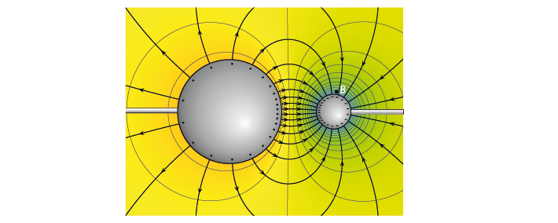Figure 3: Electric potential mapped around a positive and negative charge.
© 2010 Geek3 /CC BY-SA 4.0, commons.wikimedia.org/wiki/File:VFPt_metal_balls_plusminus_potential%2Bcontour.svg
The electric potential is represented as colour. We have a high, positive electric potential surrounding our positive charge, and a low (blue) negative potential surrounding our negative charge. The difference in electric potential between two points tells us how much energy we need to move a charge from one place to another. If we placed our positive +1 test charge at point A, it would follow the gradient of the electric potential, converting that electric potential into other forms of energy, until it reached the negative particle (point B). We could use that converted potential energy to power something else. In contrast, to move the same particle from point B to point A, we would need to provide additional energy to counteract the repelling force generated by the positive point charge. If we add more point charges (that are not allowed to move) the generated forces will sum, giving a more complex map of electric potentials at every point in space.
When we do extracellular recordings, we are measuring the difference in electric potential (measured in Volts, and often called ‘voltage’) between the tip of our electrode and our ground or reference point. To describe the height of a mountain, there is no such thing as absolute altitude; instead, we use ‘sea level’ as our point 0 and measure from there. It doesn’t matter which point we take as point 0, as long as we use the same value when we are comparing measurements. The same goes for voltage: we pick a point to call ‘0 V’ and compare the rest of the circuit to that. This point can be the negative terminal of a battery, the extracellular fluid, or a point at infinity, far from all sources of electric potential (Einevoll et al., 2013).
Resistance and Ohm’s Law¶
Resistance opposes current flow. If you increase the resistance in a circuit without increasing the electric potential difference, current will be reduced.
Ohm’s law describes how electric potential difference (V), current (I) and resistance (R) are related:
We can use this relationship to calculate how much current will flow, if we know the electric potential difference and the total amount of resistance that the charges will face.
Test your understanding of Ohm’s law using the circuit simulator below, which models a simple circuit with a battery and two resistors. Current flows from the positive terminal of the battery to ground, which is the negative terminal of the battery.

Test your understanding
Click on the image to go to the simulator. Right-click on the top wire in the circuit, and then select Edit to display the current through that wire. Double-click on either of the resistors to decrease their value and see how the current in the circuit responds.
Here’s another simulation demonstrating Ohm’s law. This time, the current moves from a 5 Volt voltage source (bright green) into ground (grey, earth), across one of two resistors.
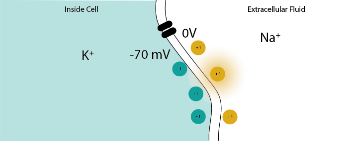Test your understanding
Click on the image to access the circuit simulator. Display the voltage and current over both resistors in the ‘scope’ (right click/show in new scope). What will happen to the voltage and current over the left resistor if you double its resistance? What will happen to the voltage and current over the left-hand resistor? Test whether your predictions were correct.
Voltage Dividers¶
When we measure voltage, for instance if we measure the output of a battery, we always measure it relative to a point that we consider 0V. In a circuit powered by a battery, we consider the negative terminal to be at 0V. If there is a connection to earth, or ground, this is taken as 0V.
Voltage (potential energy difference) ‘drops’ over each resistor, as potential energy is converted to another form of energy (such as heat or light). In a circuit powered by a 9V battery, all 9V of potential energy from our battery source must drop over circuit components, so that we end up back at 0V.
The higher the value of the resistor, the higher the voltage drop over it, but the total voltage drop over the circuit must equal the provided voltage.
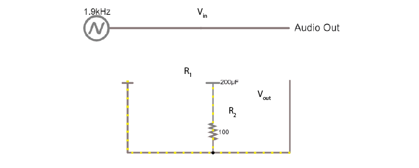That means that, in a circuit with multiple resistors in series, the ratio of their resistances determines how much voltage will drop over each. We can therefore split up (divide) the voltage from a source across resistors. If we measure the voltage in between these resistors as Vout:
This is a very important concept in electrophysiology. We intentionally build voltage dividers into our circuits when we want to change a voltage. Because any two resistors in series are automatically a voltage divider, and because any material provides a certain amount of resistance to current, we also have ‘accidental’ voltage dividers all over our set up and throughout our acquisition system; anywhere we have resistances in series, for instance in our electrode. By being aware of existing voltage dividers and how they affect our signal, we can design our acquisition systems to give us the best possible signal.
Test your understanding
Click on the image of the voltage divider to open a simulated voltage divider. Build your own voltage divider circuit in which you use a 3V battery and two resistors to provide an 800 mV output voltage.
As capacitors also impede current flow and cause voltage drops, you could also build a capacitive voltage divider.
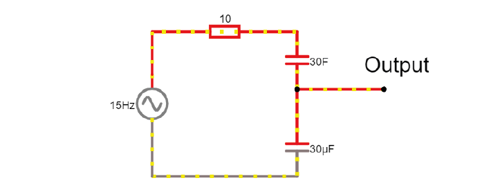Capacitors¶
Warning
When using capacitors, always check whether your capacitors are polarised or non-polarised. Polarised capacitors must be used in a specific orientation. Usually, ceramic capacitors are not polarised and you can use them in either direction, whereas tube-shaped electrolytic capacitors are polarised. The negative pin is indicated by a ‘-’ marking, and the positive leg is often longer.
Capacitors, direct current¶
In conductive materials, charged particles (ions or electrons) are free to move. This can be, for instance, a metal or a solution containing ions.
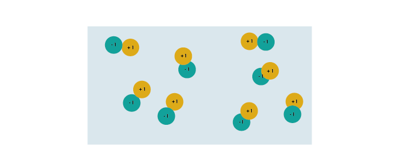We can separate this solution into two by introducing a thin non-conducting layer. The ions can still move around, but they cannot cross the layer to the other side. This is already a capacitor.
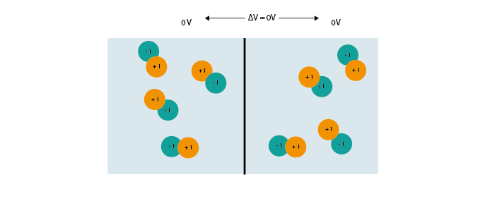What happens when we add some electrical driving force, like a positive charge on one side? Negative ions will be attracted to it, and positive ions will be repelled. Though they cannot cross the barrier layer we created, the electric forces still influence each other through that thin layer. Ions become separated into positive and negative areas.
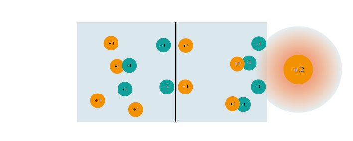If we increase the size of the positive charge on the right, our ions will experience increased attraction; now we see maximum charge separation, with no more free ions that can move around and create a current.
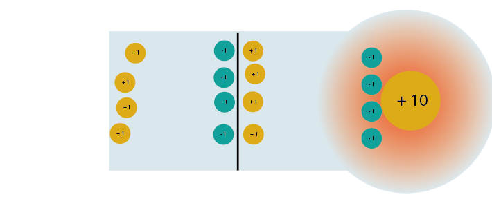In the real world, we can’t just buy a single +10 charge to influence our capacitors. What we can do, is induce an electric potential difference, and put one chamber at a more negative potential than the other. The positive ions will move towards that lower potential, inducing the same separation of charge. The larger the potential difference, the more of the available charge is separated, until all charge is at an optimal organisation, balanced between surrounding charges it is attracted to and repelled by. This is what a capacitor can do; it can separate charges when it has a potential difference across its two sides. We sometimes say that a capacitor ‘stores’ charge.
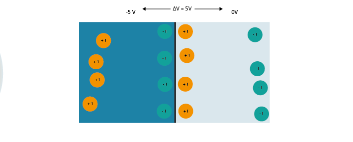The capacitance is the amount of charge that a capacitor can separate. We can separate more charge by having a thinner separating layer. Electric force decreases over distance, so a thinner layer allows charges to have a larger influence on each other. The larger the surface area of the layer, the more ions can be physically separated. The formula for capacitance is therefore:
Where C = capacitance, \(\epsilon 0\) = conductivity of the separating layer, A is the area of the separating layer, and d is the distance between the conductive materials.
The amount of charge (Q) a capacitor can separate depends on is its capacitance (C, measured in farads) and the voltage (V) across the capacitor.
In a direct current circuit, current will flow while the capacitor charges, as charge is pushed or pulled on either plate. Current flow will stop once the capacitor is fully charged. This electric charge can be discharged (and, for instance, used to power something) by providing a path that connects the positive and negative charges of the capacitor. In this simulation, you can charge and discharge a capacitor and see the current flow through the circuit.
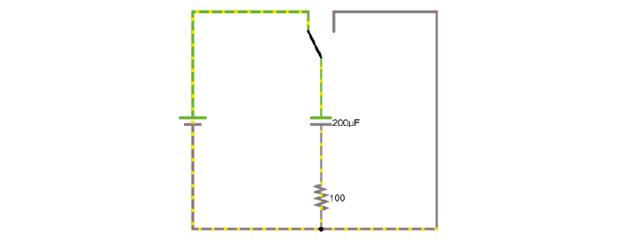Test your understanding
Modify the simulation to power an LED (Draw/Outputs and Labels/Add LED) by the capacitor as it discharges. The simulator will turn the LED red when it is on.
Notes on understanding capacitors¶
1. ‘Real’ capacitors¶
We can build capacitors on purpose out of metal plates, separated by a thin layer of non-conducting materials. We also encounter many situations in which capacitors are formed because two non-conducting materials are separated by a thin non-conducting layer, such as cell membranes that separate conductive fluid, or when a glass pipette is lowered into the brain (the extracellular fluid and the solution inside the pipette are both conductive, the glass of the pipette is not). We often hear people say that these examples ‘act like capacitors’ but it is important to remember that these configurations are real capacitors. A charged particle cannot distinguish between a cell membrane or a purpose-built capacitor component on a breadboard. We use this fact to our advantage when we build equivalent circuits.
2. Capacitive currents¶
In circuits such as this one you can see that when we change the potential difference across the capacitor (for instance by connecting it to or disconnecting it from a battery) you will see current flowing through the capacitor. How is that possible, when we know that charges can’t cross the insulating layer? Indeed, charges cannot flow directly through the capacitor. Instead, a change in potential difference changes the amount of charge that the capacitor can separate (because \(Q = C*V\)) If we increase the electric potential difference, more positive charges will collect on one plate of the capacitor. They form an electric field that pushes away similar charges on the opposite plate. When these are initially pushed away, that movement of charge gives us current flow in the circuit. You can see in the simulator that current quickly stop flowing again, once the capacitor has either increased or decreased the amount of charge it has separated. This same phenomenon causes capacitive currents in the neuron. When the electric potential difference across the cell membrane decreases during a depolarization, the membrane can store less charge, and the previously separated charges are released and can flow as a current, which can be picked up by an electrode.
Capacitors, alternating signal¶
The action potentials and LFPs we measure from neurons can go in both directions- they are alternating signals. An alternating signal will vary in amplitude and change direction at a certain frequency, and that frequency can vary. Action potentials cause very fast (1kHz) changes in electric potential difference, whereas synaptic inputs and their sums are much slower. The power supply in your building will alternate at 50 or 60Hz.
The charge that can be separated by a capacitor is dependent on the electric potential difference across the capacitor. When we apply an alternating signal to a capacitor, we are constantly increasing and then decreasing that electric potential, and therefore changing how much charge can be separated. When we were only dealing with resistors, changes in our circuit happened instantly. Introducing a capacitor into our circuit means that we have to take time into account, as it takes time for the capacitor to charge and discharge, to adjust to the ongoing changes in electric potential. Resistors are not sensitive to changes in frequency, but capacitors are. If we want to measure a very high frequency, we have to make sure that the capacitors in our circuits can keep up. Here is a demo where an alternating signal increases and decreases in frequency.
Press ‘Play Audio’ to hear how the sound is modulated as the frequency increases.
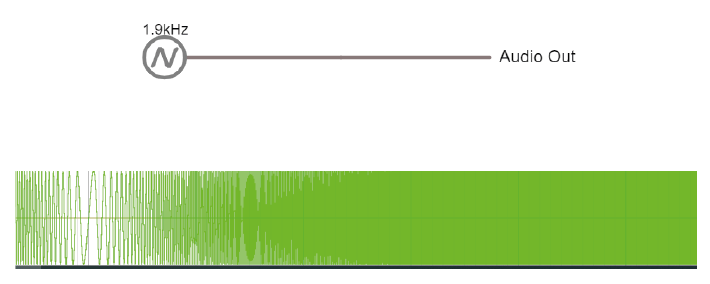
Click on the above image to open the circuit simulator. You will see two circuits powered by an alternating voltage source, each with a different frequency. In the scope below, the voltage trace of the source and the capacitor are plotted.
Test your understanding
Change the simulator oscilloscope to display the current in the circuit (for instance the current flowing through the stretch of wire).
Test your understanding
Add a third circuit, powered by an alternating voltage source of 120 Hz. What happens as the frequency increases?
Impedance¶
If we apply a direct voltage (e.g. a battery) to a resistor or circuit and measure the current flow, we can determine the resistance. What happens when we apply an alternating signal instead, such as a sinusoidal wave or our neuronal signals? In these cases, we need to use Impedance (Z), measured in Ohm. The impedance represents opposition to current flow measured in both magnitude and phase, which allows us to describe the relationship between voltage and current for time-varying signals. We can measure impedance values of a component at different frequencies, so that we understand both the magnitude and phase relationship between V and I over a broad frequency range (from 1 Hz to 10 kHz). Let’s examine the response of resistors and capacitors to an applied sinusoidal voltage (an alternating signal).
Impedance: Resistors¶
For resistors, the impedance magnitude (Z) is constant and does not vary with the frequency of signal applied. The impedance follows Ohm’s Law (V = IR), which doesn’t take the frequency of the signal into account.
Impedance: Capacitors¶
In contrast, for a capacitor the current is 90° out of phase with the voltage, and the magnitude of impedance decreases as the frequency increases. We can therefore only describe the impedance of a capacitor at a certain frequency.
The magnitude of impedance of a capacitor will decrease with increasing frequency. The larger the capacitance C, the lower the impedance at a specific frequency. In electrophysiology, we are often interested in the impedance of capacitors at 1kHz, because that is the frequency at which spikes occur.
Test your understanding
If you want to play around with this idea before moving on, try plotting the relationship between impedance and frequency for a capacitor with C = 2. Then plot the same line for C = 20. What is the difference? Remember that we are interested in signals that last 1 ms, so are around 1kHz.
When you see a capacitor in a circuit, you know you need to think about the frequency of the signal. Steady direct current has no frequency, so Xc is infinite: capacitors only pass alternating signals.